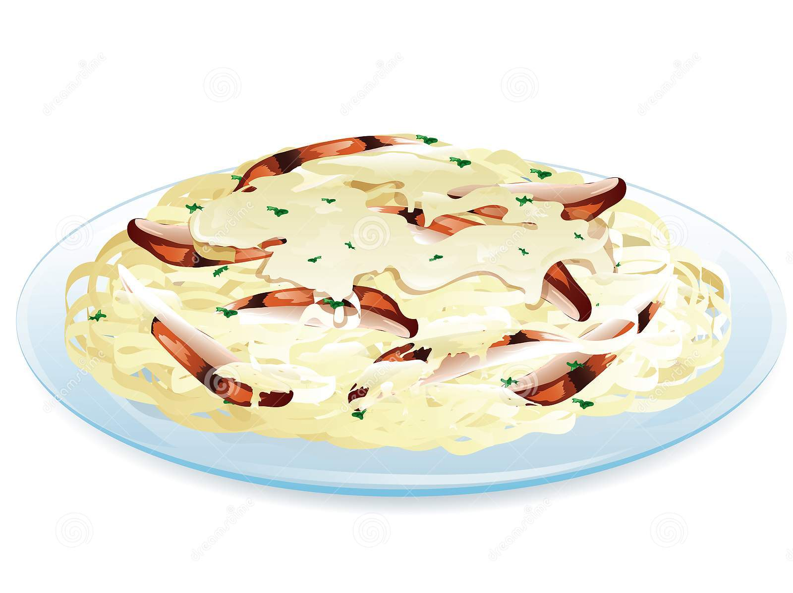

Chicken Parmesan

Description
Chicken Parmesan, or "Pollo alla Parmigiana" in Italian, is a classic Italian-American dish that is loved all around the world. As Italian-American chef Lidia Bastianich once said, "Chicken Parmesan is one of those dishes that is beloved by everyone - it's comfort food at its best."
Ingredients
- 4 boneless, skinless chicken breasts
- 1 cup Italian seasoned breadcrumbs
- 1/2 cup grated Parmesan cheese
- 2 eggs, beaten
- 1 cup tomato sauce
- 4 slices mozzarella cheese
- 1/4 cup chopped fresh basil
- Salt and black pepper to taste
- Olive oil for frying
Steps
- Preheat oven to 375°F (190°C).
- Season the chicken breasts with salt and black pepper.
- In a shallow dish, combine the breadcrumbs and grated Parmesan cheese.
- In another shallow dish, beat the eggs.
- Dip each chicken breast in the beaten eggs, then coat in the breadcrumb mixture.
- Heat a thin layer of olive oil in a large skillet over medium-high heat.
- Add the breaded chicken breasts and cook for 2-3 minutes on each side, until golden brown.
- Transfer the chicken breasts to a baking dish.
- Spoon tomato sauce over the chicken breasts, then top each one with a slice of mozzarella cheese.
- Bake for 20-25 minutes, until the chicken is cooked through and the cheese is melted and bubbly.
- Top with chopped fresh basil before serving.
Enjoy your delicious and hearty Chicken Parmesan!
Home